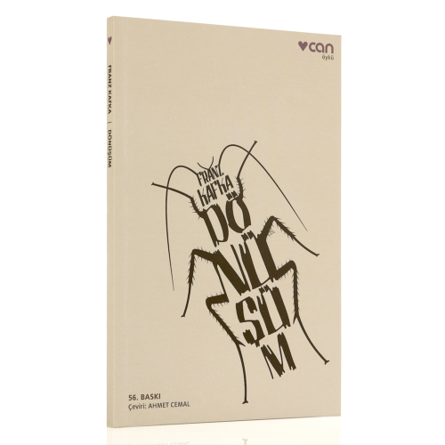

Jerome David Salinger, Çavdar Tarlasındaki Çocuklar
Khaled Hosseini, Uçurtma Avcısı
Jonathan Livingston, Martı
George Orwell, Hayvan Çiftliği
Stefan Zweig, Satranç
"Kitap bir limandı benim için... Ve kitaplardaki insanları sokaktakilerden daha çok sevdim.".
Bülbülü Öldürmek - Harper Lee Bülbülü Öldürmek - Harper LEE
1960 yılında yayınlandığından bu yana bir dünya klasiği olan, bütün edebiyatseverlerin gönlünde özel bir yer edinen, Pulitzer ödüllü Bülbülü Öldürmek Amerika’nın güneyinde yaşanan ırkçılığı ve eşitsizliği bir çocuk kahramanın, Scout Finch’in gözünden anlatıyor.
Harper Lee, kullandığı yalın ama çarpıcı dil aracılığıyla adalet, özgürlük, eşitlik ve ayrımcılık gibi hâlâ güncel temaları, Scout’un büyüyüş öyküsüyle birlikte dokuyarak, iyilik ve kötülüğü hem bireysel hem de toplumsal olarak mercek altına alıyor. Bir zencinin haksız yere suçlanması üzerinden gelişen olaylar; önyargılar, riyakârlık, sınıf ve ırk çatışmalarıyla beslenen küçük Amerikan kasabasının sınırlarını aşıp, insanlar arası ilişkide adaletin ve dürüstlüğün önemini anlatan evrensel bir hikâyeye dönüşüyor. Hem şiddet ve karanlığıyla ürperten hem de insani vurgusuyla sarıp sarmalayan, çağdaş dünya edebiyatının en önemli örneklerinden biri olan bu klasik roman, Ülker İnce çevirisiyle tekrar Türkçede.
Çağdaş dünya edebiyatının en önemli eserlerinden biri olan, ilk kez 1960 yılından yayımlanan Bülbülü Öldürmek kitabı Harper Lee’nin en sevilen eserlerinden biri olarak listelerde yer buluyor. Pulitzer ödüllü roman, Amerika’nın güneyinde yaşanan ırkçılığı ve eşitsizliği konu ediniyor. Romanın olay örgüsü, kitabın çocuk kahramanı Scout Finch’in gözünden okuyucuya aktarılıyor.
Yalın dili ve çarpıcı anlatımı ile Bülbülü Öldürmek tüm zamanlarda var olması mümkün konusu ile her dönemin ilgi uyandıran eserleri arasında sayılıyor. Sel Yayınları’ndan çıkan kitap, Ülker İnce tarafından orijinal dili İngilizceden Türkçeleştiriliyor. Irkçılık, ayrımcılık, eşitsizlik gibi temaların yalın bir dille anlatılışı, okuyucuyu, kitaba hayran bırakıyor. Bir “zenci”nin haksız yere suçlanması ile başlayan hikaye, küçük bir Amerikan kasabasını aşıp evrensel bir öyküye dönüşüyor. Scout’un büyümesi ile ayrıntıları işlenen roman, iyilik ve kötülüğü bireysel ve toplumsal düzeyde ele alıyor. Bülbülün öldürülmesinin günah olması üzerinden bir metafor ile işlenen hikaye, bireysel önyargılar ve toplumsal normlarla bezenen insanların, hikayenin merkezini oluşturan olaylar karşısındaki tepkilerine yer veriyor.
1926 yılı doğumlu Amerikalı yazar Harper Lee yazdığı otobiyografik öykülerinden Bülbülü Öldürmek kitabına ulaşan bir yol çiziyor. Bu romanın ardından birkaç deneme dışında herhangi bir yazı kaleme almayan yazar münzevi bir hayat sürerek 2016'da hayata veda ediyor. Ölümünden kısa bir süre önce Bülbülü Öldürmek kitabından önce yazdığı ancak yayımlanmamış Tespih Ağacının Gölgesinde kitabı okurla buluşuyor ve yazarı tekrar gündeme getiriyor. Okuyucular tarafından Harper Lee’nin kendi yaşamından kesitler taşıdığı düşünülen kitapta ayrıca bazı hukuki anlatımlar görülüyor. Olay örgüsündeki hukuki konuların detaylı ve yerinde anlatımları, yazarın aldığı hukuk eğitiminden izler taşıyor.
Yazarın kişisel birikimi, eğitimi ve yaşantısından izler taşıyan Bülbülü Öldürmek, yazarın ilk ve uzun süre tek romanı olarak tarihe geçiyor. Kitapta yer alan Dill karakterinin yakın arkadaşı olan ünlü yazar Truman Capote'den esinlendiği biliniyor. İşlediği konuların evrenselliği sayesinde her ülkeden okuyucunun ilgisini çeken ve kendinden izler bulduğu kitap, her yaştan yetişkin okuyucunun kalbinde önemli yer tutuyor. Dilinin sürükleyici olması sayesinde kitap kısa sürede okunabiliyor ve hayat boyu geri dönüp okunabilecek kitaplar arasında sayılıyor. Ülkesinde, özellikle de o dönemde hakkında çok konuşulamayan ırkçılıkla ilgili bir kitap yazması yazarın cesaretini gösteriyor.
Bülbülü Öldürmek kitabı sosyal paylaşım sitelerinde sıklıkla kendisine yer buluyor. Goodreads’de günden güne hakkında paylaşım yapanlar artıyor. Tarihi ve özellikle gerçekçi hikayeleri sevenler tarafından ilgiyle okunabilecek Bülbülü Öldürmek, adalet kavramına yeni bir bakış açısı geliştirebilmeyi sağlıyor. Amerika’da geçen hikaye, işlediği ırkçılık konusu ile bütün dünyaya seslenen bir anlatım sunuyor. Kitabın bir diğer konusu da çocuk yetiştirme olarak dikkat çekiyor. Kitabın kahramanı olan çocukların büyümesinde ve doğal olarak karakterlerinin oluşma sürecinde, çevrenin ve ailenin rolü de kitabın hikayesinde kendine yer buluyor. Kitabın yazıldığı dönemde, tarihi sürecin bireylere, özellikle de çocuklara etkisi gösteren unutulmaz bir eser ortaya çıkıyor. Adalet, eşitlik, bireycilik, toplum, hak, hukuk, insan sevgisi, insan hakları gibi bildiğimiz birçok kavramın Bülbülü Öldürmek kitabındaki kahramanlarda hayat bulması sayesinde bu kavramları bir de yaşayanların gözünden görebilmek mümkün hale geliyor.
Bazı lise ve üniversitelerin ders müfredatlarında dahi kendine yer bulan roman, yetişkin her bireyin en az bir kere okuması gereken popüler kitaplar arasında önemli bir yer tutuyor. 355 sayfalık, bir solukta okunabilen anlatıma sahip Bülbülü Öldürmek kitabı edebiyatseverler tarafından etkisinden uzun süre kurtulamayacağınız, modern klasikler arasında kendine saygın bir yer edinen kitaplar arasında gösteriliyor.
1984 - George Orwell
Parti’nin dünya görüşü, onu hiç anlayamayan insanlara çok daha kolay dayatılıyordu. (...) Her şeyi yutuyorlar ve hiçbir zarar görmüyorlardı çünkü tıpkı bir mısır tanesinin bir kuşun bedeninden sindirilmeden geçip gitmesi gibi, yuttuklarından geriye bir şey kalmıyordu.
George Orwell’in kült kitabı Bin Dokuz Yüz Seksen Dört, yazarın geleceğe ilişkin bir kâbus senaryosudur. Bireyselliğin yok edildiği, zihnin kontrol altına alındığı, insanların makineleşmiş kitlelere dönüştürüldüğü totaliter bir dünya düzeni, romanda inanılmaz bir hayal gücüyle, en ince ayrıntısına kadar kurgulanmıştır. Geçmişte ve günümüzde dünya sahnesinde tezgâhlanan oyunlar düşünüldüğünde, ütopik olduğu kadar gerçekçi bir romandır Bin Dokuz Yüz Seksen Dört. Güncelliğini hiçbir zaman yitirmeyen bir başyapıttır; yalnızca yarına değil, bugüne de ilişkin bir uyarı çığlığıdır.
Pulitzer ve Nobel Edebiyat Ödülü'nü kazanan John Steinbeck'in çağımızın toplumsal ve insani meselelerini ustalıkla resmettiği eserleri modern dünya edebiyatının başyapıtları arasında yer alır. Steinbeck romanlarında yalın ve keskin bir gerçeklik sunarken yine de her seferinde çarpıcı bir öykü ile çıkar okurunun karşısına. Tarihin bir kesitindeki dramı insani ayrıntıları kaçırmadan sergilerken, "tozpembe olmayan gerçekçi bir umudun" türküsünü dillendirir. Bu nedenle eserleri edebi değerleri kadar güncelliklerini de hiç yitirmemiştir.Fareler ve İnsanlar, birbirine zıt karakterdeki iki mevsimlik tarım işçisinin, zeki George Milton ve onun güçlü kuvvetli ama akli dengesi bozuk yoldaşı Lennie Small'un öyküsünü anlatır. Küçük bir toprak satın alıp insanca bir hayat yaşamanın hayalini kuran bu ikilinin öyküsünde dostluk ve dayanışma duygusu önemli bir yer tutar. Steinbeck insanın insanla ilişkisini anlatmakla kalmaz, insanın doğayla ve toplumla kurduğu ilişkileri de konu eder bu destansı romanında. Kitabın ismine ilham veren Robert Burns şiirindeki gibi; "En iyi planları farelerin ve insanların / Sıkça ters gider..."

İlk kez 1915’te “Die Weissen Blaetter” adlı aylık dergide yayımlanan Dönüşüm, Kafka’nın en uzun ve en tanınmış öyküsüdür ve yayımlanmasının üzerinden nerdeyse bir asır geçmesine rağmen hâlâ tüm dünyada en çok okunan kitaplar arasındadır. 17 Ekim 1912’de Felice Bauer’e gönderdiği mektupta Kafka Amerika romanı üzerinde çalıştığını, ilerleyemediğini görünce sıkıldığını ve yataktan kalkamaz hale geldiğini, bu nedenle bir öykü yazarak ara vermek istediğini yazar. Dönüşüm işte böyle ortaya çıkar. Kumaş pazarlamacısı olan Gregor Samsa’nın uykusundan kocaman bir böceğe dönüşerek uyanmasıyla başlayan Dönüşüm, giderek gerçeklikle kurmacanın sınırlarını zorlayan müthiş bir anlatıma dönüşür.
“Yazılmış en iyi bilimkurgu romanı. İlk okuduğumda, yarattığı dünyayla kâbuslar görmeme sebep olmuştu.” -Margaret Atwood
“Öyle bir eser ki, hakkında ne söylesem eksik kalır.”
- Neil Gaiman
Hugo En İyi Roman Ödülü Prometheus Şeref Kürsüsü Ödülü
Ray Bradbury sadece bilimkurgunun değil fantastik edebiyatın ve korkunun da yirminci yüzyıldaki ustalarından biri. Bilimkurgunun “iyi edebiyat” da olabileceğini kanıtlayan belki de ilk yazar. Yayımlandığı anda klasikleşen, distopya edebiyatının dört temel kitabından biri olan Fahrenheit 451 ise bir yirminci yüzyıl başyapıtı.
Guy Montag bir itfaiyeciydi. Televizyonun hüküm sürdüğü bu dünyada kitaplar ise yok olmak üzereydi zira itfaiyeciler yangın söndürmek yerine ortalığı ateşe veriyordu. Montag’ın işi ise yasadışı olanların en tehlikelisini yakmaktı: Kitapları.
Montag yaptığı işi tek bir gün dahi sorgulamamıştı ve tüm gününü televizyonla kaplı odalarda geçiren eşi Mildred’la beraber yaşıyordu. Ancak yeni komşusu Clarisse’le tanışmasıyla tüm hayatı değişti. Kitapların değerini kavramaya başlayan Montag artık tüm bildiklerini sorgulayacaktı.
İnsanların uğruna canlarını feda etmeyi göze aldığı bu kitapların içinde ne vardı?
Gerçeklerin farkına vardıktan sonra bu karanlık toplumda artık yaşanabilir miydi?
Fahrenheit 451, yeryüzünde tek bir kitap kalacak olsa, o kitap olmaya aday.
“Mutlu olmamız için gerekli her şeye sahibiz, ama mutlu değiliz. Bir şey eksik. Etrafa bakındım. Ortadan kaybolduğunu kesinlikle bildiğim tek şey, on-on iki yıldır yaktığım kitaplardı.”
Amerikalı yazar Jerome David Salinger tarafından yazılan Çavdar Tarlasında Çocuklar kitabı dünyada 65 milyondan fazla satarak büyük başarı elde etmesiyle tanınıyor. Orijinal adı "The Catcher in the Rye" olan kitabı İngilizce olan ana dilinden Coşkun Yerli çeviriyor. İlk çevirisi 1967 yılında Fransızca versiyonundan yapılan kitap bu sebeple Türk okurlar arasında "Gönülçelen" adı ile de biliniyor. Bir sonraki basımda ise orijinal adına daha yakın olan Çavdar Tarlasında Çocuklar tercih ediliyor.
Amerika'da kimi eyaletlerde yasaklanan kimisinde okunması için teşvik edilen eser, yazarın ilk ve tek romanı olarak piyasada yerini alıyor. Kitabı çıktıktan sonra üzerinde oluşan yoğun ilgiden sıkılan yazar başka bir roman yazmak istemiyor. Yapı Kredi Yayınları tarafından yayımlanan roman, 198 sayfa ve birinci tekil şahıs kullanılarak kaleme alınıyor. Roman, New York'lu zengin bir burjuva ailesinin oğlu olan Holden Caulfield'in büyümesi ile birlikte yaşanan keyifli ve hüzünlü öyküsünü anlatıyor. Kitabın ana karakteri olan Holden 16 yaşında, liseye giden bir öğrenci olarak okuyucu ile buluşuyor. Daha önce pek çok okuldan kovulan Holden, insanların günlük hayatta kendisine ve birbirlerine olan sahtekar, yapmacık, ikiyüzlü davranışlarına atıfta bulunuyor. Egoların yersizliğine ve üstünlük çabalarına karşı isyan niteliği taşıyan eserde, Holden'in karşılaştığı çıkarcı durumlar realist yöntemle gözler önüne seriliyor. Romanda yer alan Stradlater, Ackley, Sally, Ernie, Jane, Luce, Childs, Mr. Antolini, Mr. Spencer gibi karakterler Holden'ın çevresinde bulunan ve davranışlarıyla insanı neredeyse çileden çıkaran sahte insanlara örnek olarak gösteriliyor. Tüm sahte davranışlarına rağmen bu kişilerin istisnai olarak iyi yönlerinin de olabileceğinden bahsediyor.
Dünya edebiyatı içerisinde en çok üretim yapan ve sanata değer veren Amerikan edebiyatı kitapları arasında yer alan bu eser en iyi kitaplardan biri olarak karşımıza çıkıyor. Okuldan atılan Holden Caulfield’ın evden kaçma planlarının ardından üç gün boyunca yaşadığı serüveni akıcı bir dille kaleme alan yazar, böylece daha fazla okuyucu kitlesine ulaşıyor. Salinger'ın kısa hikayelerinin dışında tek romanı olan "Çavdar Tarlasında Çocuklar" adlı eser The New York Times'ın en çok satanlar listesinde haftalarca yerini koruyor.
Normal olan tüm davranış biçimlerine çıkarcı bir yaklaşımla anormal olarak bakmak, kişinin kendinde geç kalmışlık hissi oluşturuyor. Çocuk masumiyetinin sıkça işlendiği eser, yazar tarafından on yılda geliştiriliyor. Kısa bir öykü ile yola çıkan Jerome David Salinger öyküsünü romanlaştırarak yoğun ilgi görüyor. Modern Amerikan sisteminin kölesi olan karakter, büyüklerin düzmece dünyasının karmaşasında isyana başvuran gencin içsel devinimini konu ediniyor. Ruhsal buhranı içinde oldukça çaresiz olan Holden karakteri ile toplumsal gerçeklik algısı sorgulanıyor.
Afgan asıllı Amerikalı Yazar Khaled Hosseini’nin kaleme aldığı Uçurtma Avcısı, yüreklere işleyen hikayesiyle yayımlandığı günden itibaren en çok satan romanlar arasında yer alıyor. 2003 yılında İngilizce olarak yayımlanan eser, yazarın hayatından izler taşıyor. Roman, uzun yıllardır siyasi karışıklıklar ve savaşlarla gündeme gelen Afganistan’daki insanlık dramına dikkat çekiyor.
Konusu arkadaşlık üzerine kurulmuş olan Uçurtma Avcısı, insanlığa ait ortak duygularla tüm dünyayı kucaklıyor. Eserinde dostluk bağlarının yanı sıra baba sevgisi, fedakarlık, yalan ve ihanet gibi konuları da ustalıkla işleyen yazar, okurlarını ülkeler ve zamanlar arası bir yolculuğa çıkarıyor. Uçurtma Avcısı, sahip olduğu evrensel tema ve erdem dolu mesajı ile ömür boyu unutulmayacak bir ders niteliği taşıyor.
Yayımlandığı sene olan 1970’de yılın en çok satan kitapları arasına giren ve popülaritesi zaman geçtikçe azalacağına artan Martı Jonathan Livingston, tıpkı Küçük Kara Balık ve Küçük Prens gibi hayata dair felsefi sorgulamalar yaptıran ve belki de çocuklardan daha çok büyüklerin sevdiği bir başyapıt. Amerikalı yazar Richard Bach Martı Jonathan Livingston’da insanın isterse azim ve inatla her şeyi yapabileceğini, farklılıklarımızın duruma göre bizi ileriye taşıyacak birer araç olabileceğini martı başkahramanı üstünden alegorik biçimde anlatıyor.
İngiliz yazar George Orwell, ülkemizde daha çok Bin Dokuz Yüz Seksen Dört adlı kitabıyla tanınır. Hayvan Çiftliği, onun çağdaş klasikler arasına girmiş bir diğer çok ünlü eseridir. 1940’lardaki “reel sosyalizm“in eleştirisi olan bu roman, dünya edebiyatında yergi türünün başyapıtlarından biri olarak kabul edilir. Hayvan Çiftliği’nin başkişileri hayvanlardır. Bir çiftlikte yaşayan hayvanlar, kendilerini sömüren insanlara başkaldırıp çiftliğin yönetimini ele geçirir. Amaçları daha eşitlikçi bir topluluk oluşturmaktır. Aralarında en akıllı olan domuzlar, kısa sürede önder bir takım oluşturur
ama devrimi de yine onlar yolundan saptırır. Ne yazık ki insanlardan daha baskıcı, daha acımasız bir diktatörlük kurulmuştur artık. George Orwell, bu romanında tarihsel bir gerçeği eleştirmektedir. Romandaki önder domuzun, düpedüz Stalin’i simgelediği açıktır. Diğer kahramanlar gerçek kişileri çağrıştırmasalar da, bir diktatörlük ortamında olabilecek kişilerdir. Altbaşlığı bir peri masalı olan Hayvan Çiftliği, bir masal anlatımıyla yazılmıştır
Stefan Zweig, çok geniş bir psikoloji birikimini eserlerinde bütünüyle kullanmış ender yazarlardandır. Onun dünya edebiyatında bir biyografi yazarı olarak kazandığı haklı ünün temelinde de bu özelliği, yani yazarlığının yanı sıra çok usta bir psikolog olması yatar. Satranç, Zweig’ın psikolojik birikimini bütünüyle devreye soktuğu bir öyküdür ve bu öykünün baş kişileri, tamamen yazarın biyografilerinde ele aldığı kişileri işleyiş biçimiyle sergilenmiştir. Zweig ölümünden hemen önce tamamladığı birkaç düzyazı metinden biri olan Satranç’ı kaleme aldığı sırada, karısı Lotte Zweig ile birlikte göç ettiği Brezilya’da yaşamaktaydı. Satranç’ta da, olay yeri olarak New York’dan Buenos Aires’e gitmekte olan bir yolcu gemisini seçmiştir. Bu gemide tamamen rastlantı sonucu karşılaşan üç kişi: yeni dünya satranç şampiyonu Mirko Czentovic, sıradan bir satranç oyuncusu olan anlatıcı ve bir zamanlar çok usta bir satranç oyuncusu olan, ama hayli zamandır satrançtan uzak kalmış bulunan Dr. B., öykünün aktörleridir.